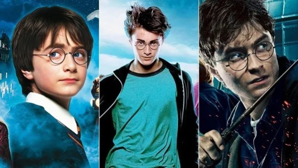
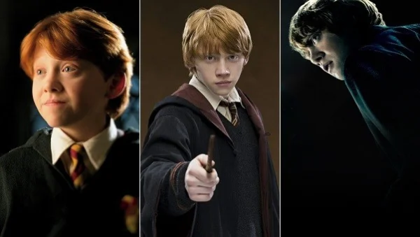
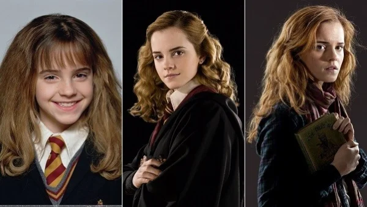
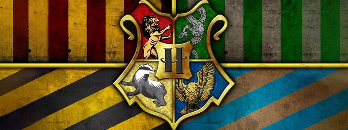
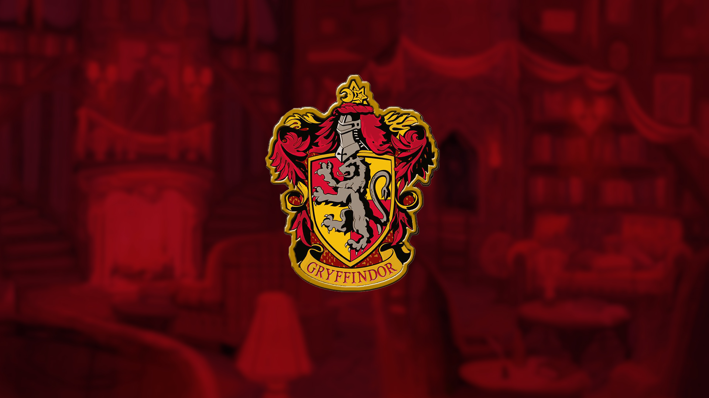
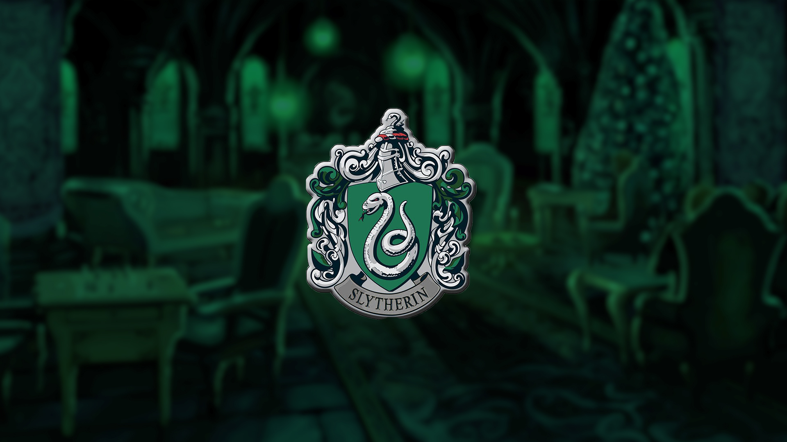

Bem-vindos Bruxos e Bruxas

.
Harry Potter é uma série de sete romances de fantasia escrita pela autora britânica J. K. Rowling. A série narra as aventuras de um jovem chamado Harry James Potter, que descobre aos 11 anos de idade que é um bruxo ao ser convidado para estudar na Escola de Magia e Bruxaria de Hogwarts. O arco de história principal diz respeito às amizades de Harry com outros bruxos de sua idade, como Ronald Weasley e Hermione Granger, e também com o diretor de Hogwarts Albus Dumbledore, considerado o maior dos magos, e seus conflitos com o bruxo das trevas Lord Voldemort, que pretende se tornar imortal, conquistar o mundo dos bruxos, subjugar as pessoas não-mágicas e destruir todos aqueles que estão em seu caminho, especialmente Harry Potter, a quem ele considera seu maior rival.
.

Harry Potter
Nascimento: 31 de julho de 1980
Casa de Hogwarts: Grifinória
Primeira aparição: Harry Potter e a Pedra Filosofal (Livro 1)
Filho de Tiago (James) e Lily Potter, Harry Tiago Potter perdeu seus pais quando tinha apenas 1 ano. Após assassinar friamente os Potter, o temido bruxo das trevas Voldemort tentou matar o pequeno Harry, mas, por algum motivo, o feitiço recocheteou e praticamente destruiu Voldemort, que desapareceu. Harry não se machucou, ficando apenas com uma pequena cicatriz em forma de raio em sua testa.
Por essa razão, o nome Harry Potter ficou marcado na história bruxa, ainda que o jovem Harry tenha crescido sem saber de nada disso. Criado por seus tios trouxas (não-mágicos), Harry sempre foi posto de lado e feito de empregado para seu primo mimado Duda. Mas tudo muda quando, aos 11 anos, ele recebe sua carta da Escola de Magia e Bruxaria de Hogwarts e descobre que é um bruxo.
Nos anos a seguir, Harry acaba encarando diferentes e mortais desafios enquanto tenta levar uma vida o mais próxima do normal na escola, onde tem aulas de feitiços, poções, voo de vassoura, herbologia e outras disciplinas. Mas o retorno de Voldemort e as tentativas de seus antigos aliados de matar o menino exigirão muito dele e de seus dois melhores amigos, Rony e Hermione.
.

.
Ronald Weasley
Nascimento: 1º de março de 1980
Casa de Hogwarts: Grifinória
Primeira aparição: Harry Potter e a Pedra Filosofal (Livro 1)
Ronald Bilius Weasley, ou Rony, é o dos filhos mais novos de Arthur e Molly Weasley. 6º dos 7 filhos da família, cresceu sentindo-se à sombra das conquistas de seus irmãos mais velhos. Com uma condição financeira humilde, sempre usou as roupas e uniforme de Hogwarts já usados por seus irmãos, bem como livros e até mesmo sua varinha, o que já foi motivo de bullying de alunos como Draco Malfoy.
Conhece Harry na Estação de Kingcross, e acaba se aproximando do garoto durante a viagem para Hogwarts. No decorrer da saga, eles e Hermione se tornam amigos inseparáveis, e Harry passa a ser tratado como parte da família pelos Weasleys.
Aos poucos, Rony se apaixona por Hermione, mas precisa vencer suas inseguranças. Embora seja medroso quanto a variadas coisas, está sempre ao lado de Harry, seja para roubar o carro voador de seus pais e garantir que eles cheguem à escola, para enfrentar aranhas gigantes das quais tem pavor ou para confrontar Voldemort e seus aliados.
.

.
Hermione Granger
Nascimento: 19 de setembro de 1979
Casa de Hogwarts: Grifinória
Primeira aparição: Harry Potter e a Pedra Filosofal (Livro 1)
Hermione Jean Granger nasceu de pais trouxas, o que fez com que sofresse um pesado preconceito de alguns dos alunos que valorizavam a "pureza de sangue dos bruxos" e se referiam a ela como "sangue sujo". Provavelmente a aluna mais brilhante que já passou por Hogwarts, Hermione é apaixonada por livros e estuda tudo que puder, o que faz dela peça fundamental na luta contra Voldemort. E sejamos sinceros, Harry e Rony estariam em grandes problemas sem a ajuda da garota.
Embora sua arrogância juvenil tenha dificultado ela fazer amigos em seu primeiro ano de Hogwarts, logo conseguiu se aproximar de Harry e Rony. Nos anos seguintes, acaba se afeiçoando por Rony, mas se magoando com a inabilidade social do amigo.
Ajuda Harry a se preparar para o Torneio Tribruxo, ensinando e praticando diferentes feitiços com ele; é a única a pensar em detalhes de sobrevivência diária para a busca das Horcruxes; ficou ao lado de Harry a cada passo de todos os mortais desafios da saga; e chegou a apagar as memórias de seus pais sobre sua própria existência, para evitar o sofrimento caso ela não retornasse da guerra contra Voldemort.
.

Apresentado ao mundo em 26 de junho de 1997, o bruxo Harry Potter protagonizou uma franquia homônima de extremo sucesso, sendo considerada por muitos críticos um clássico infantojuvenil moderno. Parte da popularidade da obra, fruto da fértil imaginação de J.K. Rowling, é o rico universo fantasioso no qual é ambientada, com destaque para o Castelo de Hogwarts, um dos seus principais cenários.
Localizada no castelo mágico de mesmo nome, a Escola de Magia e Bruxaria de Hogwarts foi fundada no século X, na Escócia, por quatro grandes bruxos: Godrico Gryffindor, Helga Hufflepuff, Rowena Ravenclaw e Salazar Slytherin. Suas personalidades e os critérios para admissão no ensino deram origem a quatro casas, conforme seus sobrenomes, para abrigar os estudantes.
Os alunos são encaminhados para uma das Casas por meio da decisão do Chapéu Seletor, um artefato mágico capaz de ler a ambição de um indivíduo. Seu julgamento, por vezes impreciso, leva os estudantes para uma das quatro casas de Hogwarts: Grifinória, Lufa-Lufa, Corvinal e Sonserina.
.

Grifinória
Lar dos bravos e cavalheiros, o símbolo da Grifinória apresenta em seu estandarte um orgulhoso leão, acompanhado das cores vermelha e amarelo-dourada. A Casa valoriza feitos de coragem e superação pessoal que costumam ser realizados por altruísmo. Seus estudantes tendem a ser bastante aventureiros, mas se destacam, sobretudo, pela lealdade.
Entretanto, os alunos da Grifinória podem ser imprudentes nos atos de bravura, muitas vezes por teimosia ou falta de melhor julgamento da situação — o que pode ser visto como egoísmo. Alvo Dumbledore, Harry Potter e Minerva McGonagall são alguns dos membros mais conhecidos da Casa.
.

Lufa-Lufa
Os estudantes da Lufa-Lufa são dedicados, pacientes e honestos. Suas admiráveis características os tornam trabalhadores árduos e modestos, sendo receptivos a todos os demais tipos de bruxos. Por outro lado, o excesso dessas qualidades pode se tornar um ponto negativo: justamente por sua flexibilidade e compreensão, os alunos podem ser complacentes e muito dependentes de outras pessoas, tornando-se ingênuos.
O estandarte da Lufa-Lufa apresenta vívido amarelo e preto como as principais cores, com um astuto texugo como mascote. Seus membros mais conhecidos são Newt Scamander, Cedrico Diggory e Ninfadora Tonks.
.

Corvinal
Os bruxos pertencentes à Corvinal se destacam por sua exímia inteligência. Nesse contexto, suas principais características são relacionadas a sabedoria, criatividade e personalidade única, o que garante a eles certa excentricidade. Contudo, a valorização exacerbada do academicismo pode torná-los perfeccionistas, frios, insensíveis e demasiadamente críticos em relação às outras Casas.
Um misterioso corvo (ou uma águia, conforme algumas representações), acompanhado das cores azul e bronze, compõe o estandarte da Corvinal. Entre seus membros mais populares, estão Luna Lovegood, Gilderoy Lockhart e Garrick Olivaras. Curiosamente, Rowena Ravenclaw é a única entre os quatro fundadores de Hogwarts sem uma tradução regionalizada para seu nome.
.

Sonserina
Sonserina é a Casa com a pior reputação. Parte dessa fama é, de certa forma, justificável, já que ela abrigou alguns dos maiores bruxos das trevas enquanto ainda eram estudantes. Entretanto, muitos de seus membros têm boas qualidades que redimem a má fama, o que os torna grandes alunos e líderes natos.
Os membros da Sonserina têm como características, sobretudo, a ambição e a busca pela grandeza, por isso estão sempre se dedicando a alcançar e expandir metas e se empenhando com inteligência em diversas áreas da magia. Por outro lado, essas qualidades podem promover um senso de competição muito aflorado, o que os torna presunçosos e egoístas.
Com uma imponente serpente como mascote, o estandarte da Sonserina é colorido com verde e prata. Alguns de seus membros mais populares são Merlin, Tom Riddle, Draco Malfoy e Dolores Umbridge.